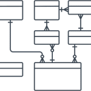

Tabelas
Todos os dados de um banco de dados relacional (BDR) são armazenados em tabelas. Uma tabela é uma simples estrutura de linhas e colunas. Em uma tabela, cada linha contém um mesmo conjunto de colunas. Em um banco de dados podem existir uma ou centenas de tabelas, sendo que o limite pode ser imposto tanto pela ferramenta de software utilizada, quanto pelos recursos de hardware disponíveis no equipamento. As tabelas associam-se entre por meio de regras de relacionamentos, que consistem em associar um ou vários atributos de uma tabela com um ou vários atributos de outra tabela. Exemplo: A tabela funcionário relaciona-se com a tabela cargo. Por este relacionamento, esta última tabela fornece a lista de cargos para a tabela funcionário. Modelo teórico usado para representar conceitualmente um BD, Idealizado por Codd (1970). Baseado numa estrutura de dados simples chamada relação. É o modelo mais amplamente usado, principalmente em aplicações convencionais de BD.
